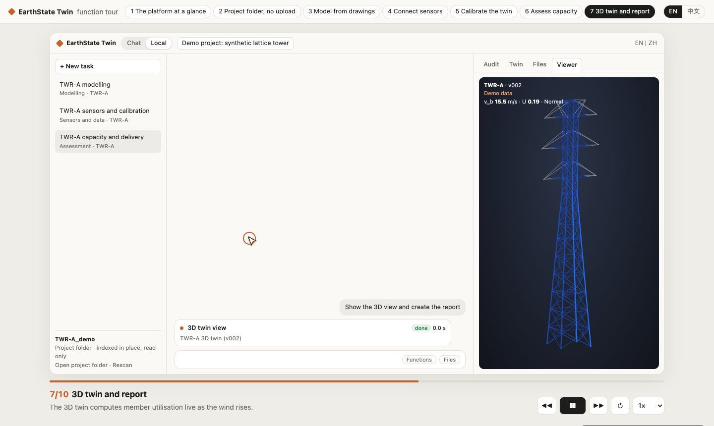

Stage 02
Automated modelling
Member-level models from vector PDF drawings and drawing tables, with self-checks before anything else runs.
Platform · EarthState Twin
Demo
EarthState Twin starts with nothing but the files. Through a conversation it takes the project files, drawings and sensor data of a structure, builds a checkable model and a twin, runs the code checks and returns a capacity assessment and a ranked repair list, with every step recorded. It was built first for lattice steel towers; bridges are next.
Six stages, one audit trail
Drawings, inspection records, sensor lists and site data are registered with their source and version.
A member-level analysis model is built directly from the drawings, including vector PDF.
Measured wind, strain and acceleration are attached to the members and nodes they describe.
The model is compared with measurements before it is trusted, and the comparison is kept.
Fast surrogate models for prediction and scenario runs, checked against the full model.
A capacity statement and repair ranking, with an audit panel and engineer sign-off.
How the AI is used
You can work through the twin in plain language. The model chooses and runs the platform's calculation skills; every value on screen comes from one of those skills, and the audit panel shows which one, with its inputs.
Signing remains the engineer's job. The twin prepares the evidence; it does not approve its own work.

Member-level models from vector PDF drawings and drawing tables, with self-checks before anything else runs.

Gauges registered on model members, records checked and corrected, the twin calibrated and validated on a held-out event.
BIM from the same drawings
The same drawings that produce the analysis model also produce an information model: IFC4 members and assemblies classified to Uniclass 2015, materials to EN 10025-2, names following ISO 19650-2 with the UK National Annex, OIR, AIR and EIR to EN 17412-1, and COBie for handover.
Standards
Verification
| Drawing to model | Every model built from drawings runs its own checks before anything else: gravity equilibrium, no mechanisms in the stiffness matrix, and natural frequencies. Each result is reported as pass, attention or fail. |
|---|---|
| Solver and wind-load suites | All automated test cases pass. Engineer review of those cases is still to be done. |
| Demonstration data | The demos use one synthetic 48 m tower. Sensor records in the demos are synthetic and labelled as demonstration data on every plot. |
| Status | Research prototype. Runs locally on Windows or macOS; core functions work offline. |
UK patent application GB2626083.6 (filed 3 November 2026), patent pending.
Try it
The function tour walks through every stage of a job. The analysis demo follows one structure from drawings to a signed result. Both use one synthetic 48 m tower.